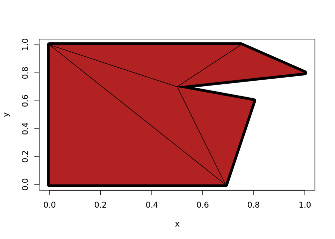
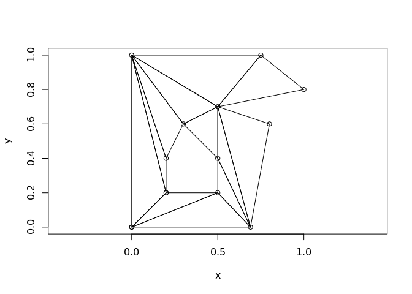

The goal of decido is to demonstrate a minimal R binding to the Mapbox library earcut.hpp.
This is to augment the JS version available in rearcut (also an R wrapper of the JS version by Mapbox).
Development
Immediate needs:
- clean up ability to specify holes
- wrap around complex types of multiple polygons, etc.
- tests!
See rearcut for some approaches to the hole encoding. It’s not hard, just rife with options. At the moment it seems best to stick close to how the JS earcut encodes them, and this translates very simply in C++.
Example
This is a basic example of triangulating a single-ring polygon. The output is a vector of triplet indices defining each triangle.
library(decido)
x <- c(0, 0, 0.75, 1, 0.5, 0.8, 0.69)
y <- c(0, 1, 1, 0.8, 0.7, 0.6, 0)
earcut(x, y)
#> [1] 1 0 6 6 5 4 4 3 2 1 6 4 4 2 1
plot(x, y)
polygon(x, y, lwd = 10)
apply(matrix(earcut(x, y), nrow = 3), 2, function(ind) polygon(cbind(x, y)[ind + 1, ], col = "firebrick"))
#> NULLSupport for holes is provided by two required arguments numholes and holes. The holes are the starting index of each hole, here in C++ 0-based convention.
## hole starts at 9
x <- c(0, 0, 0.75, 1, 0.5, 0.8, 0.69, 0, 0.2,
0.5, 0.5, 0.3, 0.2, 0.2)
y <- c(0, 1, 1, 0.8, 0.7, 0.6, 0, 0, 0.2,
0.2, 0.4, 0.6, 0.4, 0.2)
ind <- earcut(x, y, holes = 8, numholes = 1)
plot(x, y, asp = 1)
xy <- cbind(x, y)
apply(matrix(ind, 3), 2, function(i) polygon(xy[i + 1, ]))
#> NULLlibrary(oz)
oz_ring <- oz::ozRegion(states = FALSE)
ring <- oz_ring$lines[[6]]
plot(ring, pch = ".", asp = 1/cos(42 * pi/180))
indices <- earcut(ring$x, ring$y)
xy <- cbind(ring$x, ring$y)
apply(matrix(indices, nrow = 3), 2, function(ind) polygon(xy[ind + 1, ]))
#> NULLBeware!
This is in active development and the functions will change.
No checking is done on input coordinates, so use at your own risk!
Please note that this project is released with a Contributor Code of Conduct. By participating in this project you agree to abide by its terms.